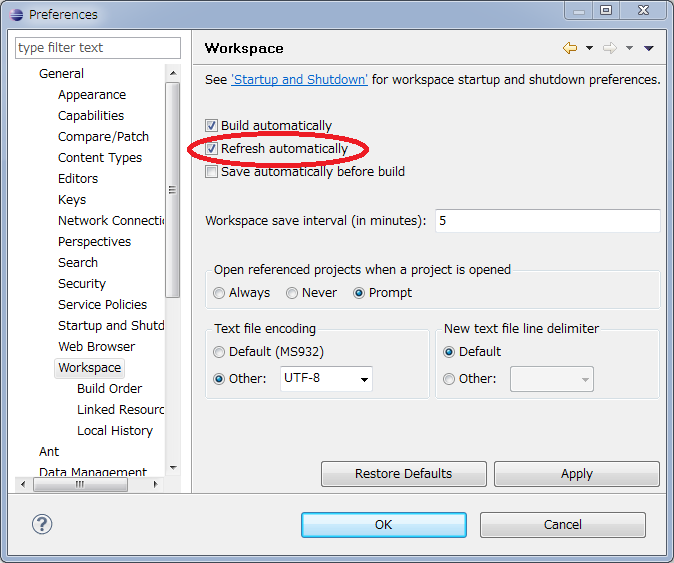

概要
Doma-Genは、AntとFreeMarkerを使用したコード生成ツールです。
Doma-Genを利用すると、次のことが可能です。
- エンティティクラスのJavaコード生成
- エンティティリスナークラスのJavaコード生成
- DaoインタフェースのJavaコード生成
- SQLのコード生成
- SQLをテストするためのJavaテストコード生成
セットアップ
Doma-Genの配布ファイルを、ダウンロードページからダウンロードします。
配布ファイルを解凍し、Doma-GenとFreeMarkerのjarファイルとサンプル用のビルドファイル（doma-gen-build.xml）を取り出してください。
Doma-GenとFreeMarkerのjarファイルは、Antタスクのクラスパスに通す必要があります。 サンプル用のビルドファイルは、独自ビルドファイル作成時のコピー元として活用してください。
タスク
Doma-Genには、2つのタスクが用意されています。
| タスク名 | 説明 |
|---|---|
| Gen | アプリケーション実行時に使用されるクラスやSQLのコードを生成します。 |
| GenTest | テストのためのコードを生成します。 |
サンプル用ビルドファイル
GenタスクとGenTestタスクを使用するサンプル用ビルドファイルの内容を示します。 これは、配布ファイルに含まれているサンプルのdoma-gen-build.xmlと同じものです。
<?xml version="1.0" encoding="UTF-8"?>
<project name="doma-gen-example" default="gen" basedir=".">
<property name="javaDestDir" value="src"/>
<property name="sqlDestDir" value="src"/>
<property name="dialectName" value="hsqldb"/>
<property name="driverClassName" value="org.hsqldb.jdbcDriver"/>
<property name="url" value="jdbc:hsqldb:file:example"/>
<property name="user" value="sa"/>
<property name="password" value=""/>
<property name="entityPackageName" value="example.entity"/>
<property name="daoPackageName" value="example.dao"/>
<property name="configClassName" value="example.AppConfig"/>
<property name="sqlTestClassName" value="example.SqlTest"/>
<property name="sqlFilePattern" value="META-INF/**/*.sql"/>
<path id="classpath">
<fileset dir="lib"/>
</path>
<taskdef name="gen" classname="org.seasar.doma.extension.gen.task.Gen" classpathref="classpath" loaderref="loader"/>
<taskdef name="genTest" classname="org.seasar.doma.extension.gen.task.GenTest" loaderref="loader"/>
<typedef name="entityConfig" classname="org.seasar.doma.extension.gen.task.EntityConfig" loaderref="loader"/>
<typedef name="daoConfig" classname="org.seasar.doma.extension.gen.task.DaoConfig" loaderref="loader"/>
<typedef name="sqlConfig" classname="org.seasar.doma.extension.gen.task.SqlConfig" loaderref="loader"/>
<typedef name="sqlTestConfig" classname="org.seasar.doma.extension.gen.task.SqlTestConfig" loaderref="loader"/>
<target name="gen">
<gen
dialectName="${dialectName}"
driverClassName="${driverClassName}"
url="${url}"
user="${user}"
password="${password}">
<entityConfig
destdir="${javaDestDir}"
packageName="${entityPackageName}"
/>
<daoConfig
destdir="${javaDestDir}"
packageName="${daoPackageName}"
configClassName="${configClassName}"
/>
<sqlConfig
destdir="${sqlDestDir}"
/>
</gen>
</target>
<target name="genTest">
<genTest
dialectName="${dialectName}"
driverClassName="${driverClassName}"
url="${url}"
user="${user}"
password="${password}">
<sqlTestConfig
destdir="${javaDestDir}"
testClassName="${sqlTestClassName}">
<fileset dir="${sqlDestDir}">
<include name="${sqlFilePattern}"/>
</fileset>
</sqlTestConfig>
</genTest>
</target>
</project>
実行方法
Eclipse3.5のWindows版を使用している場合、AntはEclipse上からではなく、コマンドラインから実行してください。 Eclipse3.5のWindows版には、コンソールに日本語を出力できない問題があります（Ecipse3.6では解決されています）。 コマンドラインから実行するには、Antを適切にインストールした環境で、次のように実行してください。
ant -f doma-gen-build.xml ターゲット名
この例では、上述したdoma-gen-build.xmlを使うものとします。 ターゲット名にはgen、もしくはgenTestを指定できます。
Eclipseを使用している場合、Eclipseの自動リフレッシュ機能を有効にしておくと、Eclipse外部で生成されたファイルが自動で認識されます。 この機能を有効にしておけば、Antでファイルを生成した後、手動でEclipseのワークスペースをリフレッシュする必要がなくなります。
この機能を有効にするには、メニューから「Window」 - [Preferences」 - 「General」 - 「Workspace」と辿り、「Refresh Automatically」をチェックします。
